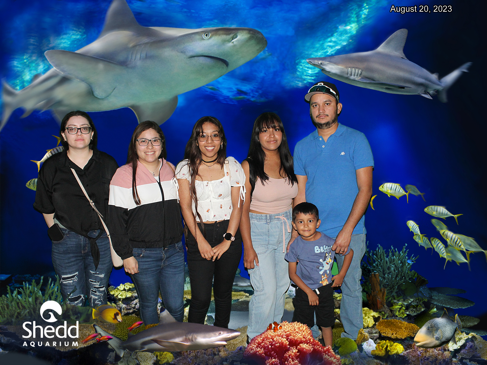
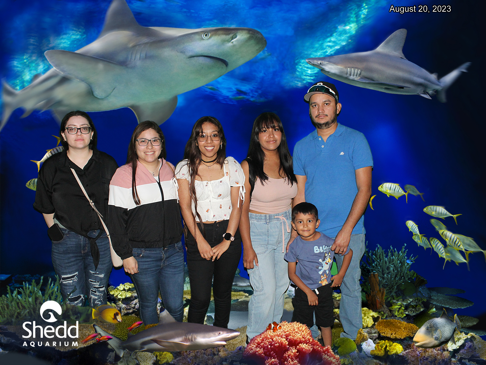

About Me Page
My name is Cristina Rodriquez. I am 23 years old. I live in Wisconsin. I have been working in Amazon fulfillment for two years on MKE2, and my area of work is Pick. which basically involves stocking shelves, maintaining the working area, and ensuring that they are clean; marking containers, and packaging items, completing order receipts, and adhering to verbal instructions.
In other words, an Amazon picker refers to one whose profession is to take orders and deliver required items to customers and other Amazon departments.
However, picker wasn't my first area of work, I started working on Stowing and stowing is someone who scans products and then places them in the appropriate location and shelf so picker packers can get them when a customer places an order. And I have been Cross-training in other areas such as packing, ship dock, water spider, tote run, and count.
Cristina@example.com
I did graduated on Criminal Justice and Crime Scene Investigator minor degree in 2022. I started working on Amazon in 2021 to help me with my colleges expensives. Especially the transportation, i communte for 3 years, i drove everyday around 2 hours to get to my college. And i didnt want to get loands.
 

I dont have a lot of friends, but those who are, stay for years. On this photo are my closet friends that i have kept it since i was in High School(2014). We still hanging together and speaking. few othem are outside of the State, but evertime they came back to our state, we all ways going out. Normally, we would go to the lake and talk.
Three of them are already mothers, and the three childs called us aunties or "tita" spanish word for Tia. I loved because i demostrated how close we are and is noticeble.